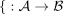
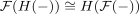
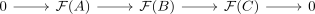
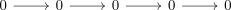
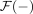

exact functor and preserving quasi isomorphisms
1. Proposition
Let  be abelian categories and
be abelian categories and

be an additive functorTFAE:
 is exact
is exact- preserves quasi-isomorphisms
2. Proof
2.1. 1)  2)
2)
follows by FHHF for exact as

2.2. 2) 1)
Proof by contraposition
Suppose is not exact, then by exact functor and exact sequence there exists an exact sequence

which is not preserved, meaning

is not exact.
This sequence in  is quasi-isomorphic to
is quasi-isomorphic to

which by additive functor and zero object gets send to
but the images under

are not quasi isomorphic (cf. exactness and homology)